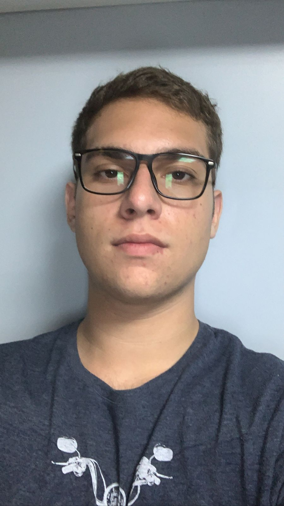

Antônio Asafe

Cientista de Dados Júnior e Progamador Python
Informações de contato:
- Telefone: 27988233950
- Email: asafetony5@gmail.com
- Espírito Santo, Vitória 29090100
Sou um profissional sério e empenhado para o melhor desenpenho
possível da empresa e de meus colegas, porém sou sociável e sei
aproveitar as relações sociais para trazer um ambiente amigável
que resulta em ainda mais desenpenho.
Sou muito curioso e durante esses 3 anos de experência com
(data engineering) e (data science) aprendi muito sobre os
dados e como eles se comportam.
Pretendo me formar na UVV em Vila Velha no curso de Sistemas
de Informação para incrementar mais meu currículo e habilidades,
e no futuro farei também o curso de Engenharia da Computação
para que eu consiga trabalhar com maior profissionalidade em
meus projetos pessoais e emopresariais.